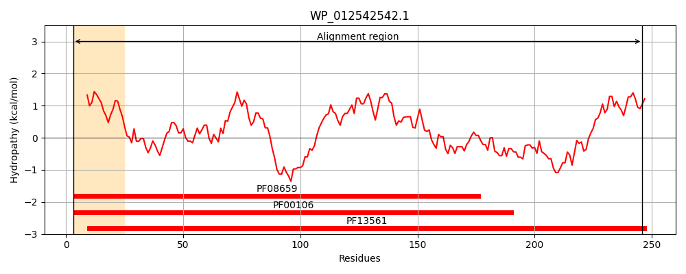
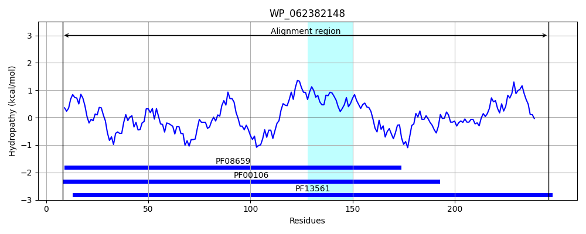
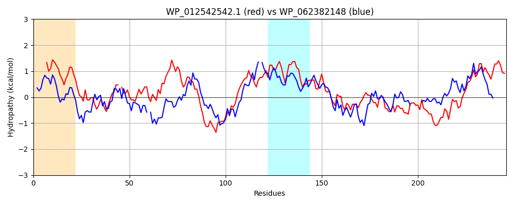

Hit Accession: WP_062382148
Hit TCID: 1.A.115.1.5
Hit Description: gnl|BL_ORD_ID|21287 gnl|TC-DB|WP_062382148.1|1.A.115.1.5 SDR family oxidoreductase [Pseudomonas abietaniphila]
Mach Len: 246
e:0.000000
Query TMS Count : 1
Hit TMS Count: 1
TMS-Overlap Score: 0.000000
Predicted Substrates:None
BLAST Alignment:
Score: 277 , Bit scores: 111 bits, E-value: 1.3e-29, Alignment length: 246, Percentage identity: 31
Query: 3 RVVVITGGGTGIGAACARLMCAAGDRVFITGRREAPLQAVADETG-ATALVGDAADGEVWGQRLLPAILDQAGGIDVLICSAGGMGNSPAAETSDSQWREALDGNLTSAFASVRACLPSLIARRGNVLFVASIASLAAGPQACGYVTAKHALIGLMRSVARDYGPQGVRANAICPGWVTTP-MADEEMRPLMEAEGLSLTEAYQRVCRDVPLRRPASPEEIAEACQFLCSPQAAIISGATLVADGG 246
++ ++TGG TGIG A A+ G V+ITGRR+A L A G AT + D+ + E L I + G +DVL +AGG P + +++Q+++ D N+ +V+ LP L+A+ +V+ S A + Y +K A+ R+ D + VR N + PG TP + D + +GL + +P+ R PEEIA A FL S A+ ++G L DGG
Sbjct: 8 KIALVTGGTTGIGLATAKRFAEEGAYVYITGRRQAELDAAVARVGNATGVQVDSTNLEQL-DALYRQIGTEKGRLDVLFANAGGGSMLPLGDITEAQYQDTFDRNVKGVLFTVQKALP-LLAKGASVILTGSTAGSSGTAAFSVYAASKAAVRAFARNWILDLKDRNVRVNTLSPGATRTPGLVDLAGPDAAQQQGL-----LDYLASQIPMGRVGEPEEIAAAALFLASDDASFVNGIELFVDGG 246 | Protein Hydropathy Plots: |
|---|
|  |  |
Pairwise Alignment-Hydropathy Plot:
|
|---|
|  |